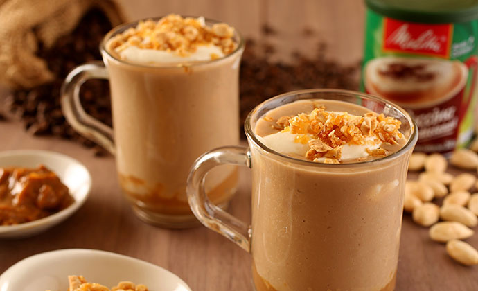

CAPUCCINO DOCE DE LEITE

Descrição
Um delicioso capuccino com um toque de doce leite
Ingredientes
- 2 colheres de sopa de doce de leite
- 1 xícara de café
- 1/2 copo americano de leite quente
- Raspas de chocolate
Modo de Fazer
- Em uma leiteira colocar o leite, o chocolate em pó, o açúcar.Coloque as colheradas de doce de leite no fundo do copo americano.
- Despeje o café e o leite
- Por cima, decore com as raspas de chocolate
- Está pronto!
Voltar